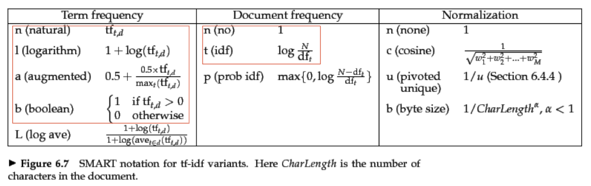
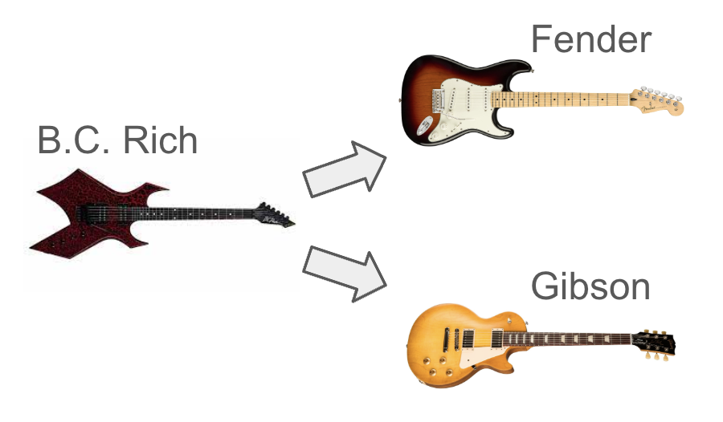
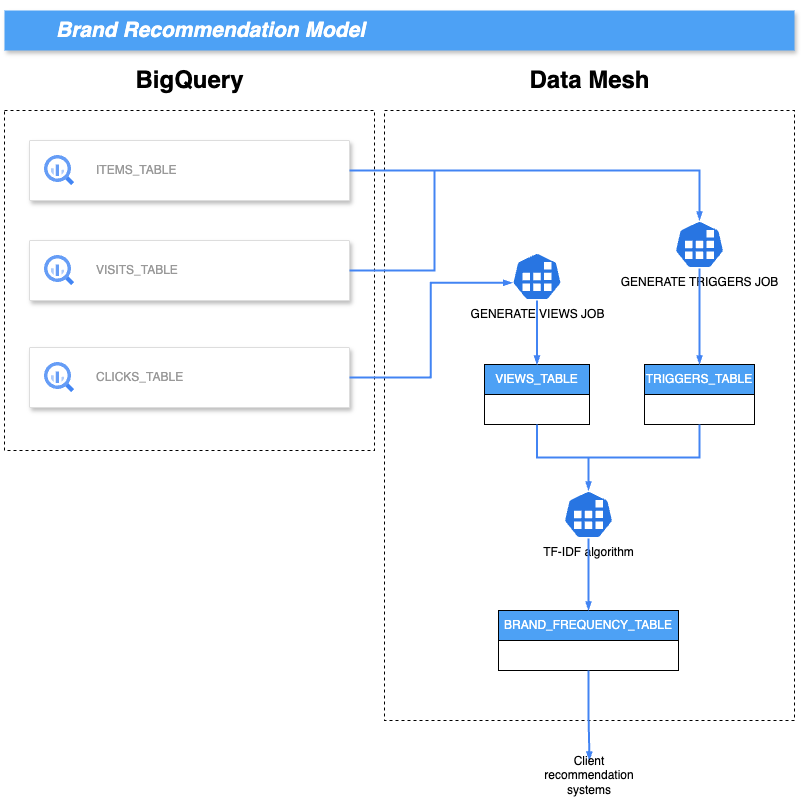

Brand Recommendation System
For this project for an e-commerce, it was developed the logic and infrastructure to generate brand recommendations, serving as input for product recommendation systems. The main source of data were view events, ie. how many views each brand got in a given period of time. Since there are brands that are very common (most viewed) they would dominate brand recommendations. This is not interesting, especially for niche brands that have nothing to do with these most viewed brands. The approach to solve this problem was using the Tf-Idf algorithm that provides a numerical statistic reflecting the importance of a word in a document relative to a collection of documents. This helped in identifying unique and relevant brands for recommendations by reducing the dominance of common brands.
This project rendered results in a 13% increase in CTR (clickthrough rate, number of clicked recommendations/number of viewed recommendations).
Some of the tools used for this project were:
Many combinations of Term Frequency and Document Frequency were tested but we ended up with better results using normal term frequency and inverse document frequency. 
To validate the model we tracked the brand triggers and brand recommendations for electric guitars. The electric guitar brand world is very interesting because it serves the purpose very well: there are brands that are regarded as the most versatile and traditional (brands like Fender and Gibson) and brands tagged as specific for certain musical genres (brands like Dean, B.C. Rich and Jackson for heavy rock). Before the Tf-Idf implementation, we had very popular brands such as Fender being recommended to niche trigger brands such as B.C. Rich and vice-versa. There wasn't much context to the recommendations given. 
After the implementation:

The final architecture of the problem: 